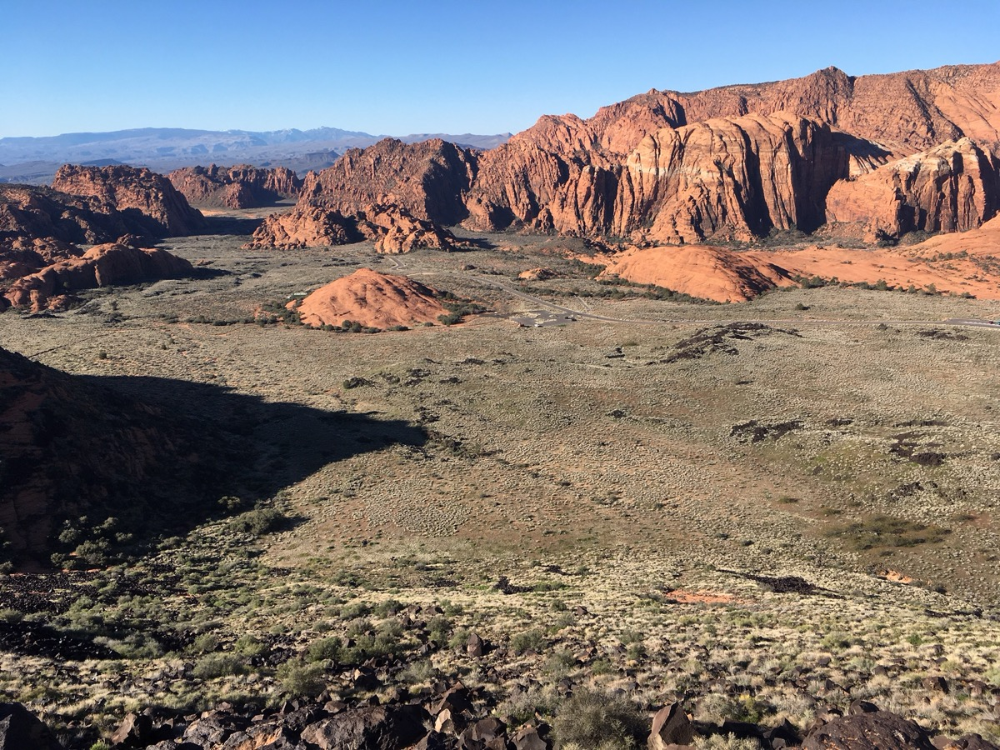

当日深度分时段行程与图文百科
锡安国家公园 (Zion) 观光巴士 ➔ 沿河平坦步道 (Riverside Walk)
🚗 驱车直达公园入口：在圣乔治凯悦享用丰富热早餐后，驱车 45 分钟抵达锡安国家公园南门访客中心停车场（持国家公园年票免费入内）。
🚌 全景观光巴士体验 (Park Shuttle)：在访客中心换乘园内免费无障碍观光穿梭巴士。坐在宽敞靠窗座位上，沿途仰望巍峨耸立的红白砂岩绝壁（天使降临峰、哭泣石等），听中文语音/解说，体能消耗为零。
🌿 沿河步道轻松漫步 (Riverside Walk)：在巴士终点站 Temple of Sinawava（第 9 站） 下车。这是一条沿着维琴河修建的无障碍硬化水泥步道，全长约 1 英里（可根据全家体力随走随停），两侧垂柳依依、绿树成荫，听河水潺潺，空气清凉怡人，毫无费力攀爬。
公园百科：维琴河如何雕刻出锡安绝壁？ (点击展开)
🌊 滴水穿石：锡安国家公园与大峡谷最大的不同在于——大峡谷是“站在高处俯瞰深渊”，而锡安是“站在峡谷底仰望高耸入云的红岩巨塔”。湍急的维琴河 (Virgin River) 每年携带数百万吨泥沙与卵石，像一把天然锯子，历经千万年将纳瓦霍砂岩深深切开，造就了深达 600~900 米的宏伟峡谷。
♿ 舒适服务：穿梭巴士配有全升降无障碍踏板与宽敞靠窗座位；沿河步道全程有石质休息长椅和林荫遮阳，游览极其舒适。
【顺路可选】雪谷州立公园 (Snow Canyon State Park) 纯车游

🚗 “微缩版锡安”纯车游模式：回程顺路驶入位于圣乔治西北侧的雪谷州立公园。这里的公路直接穿梭于红白相间的砂岩与黑色火山熔岩之间，坐在车内透过车窗即可饱览地貌奇观。
📸 路边极速拍照：在路肩平地短暂停靠 5-10 分钟拍照即可，无需下车徒步。（若全家在锡安游览后感到疲劳，可直接跳过此项，径直返回酒店休息）。
地质百科：雪谷的红白砂岩与火山玄武岩奇观 (点击展开)
🌋 水与火的交融：雪谷得名于犹他州先驱者洛伦佐·雪 (Lorenzo Snow)，并非因为下雪。这里以红白相间的古老纳瓦霍沙丘和 140 万年前火山喷发流出的黑色玄武岩熔岩地貌并存而闻名，色彩反差极具视觉张力。
返回圣乔治凯悦 ➔ 享用晚餐 ➔ 充足睡眠 (连住第2晚)
🛌 连住优势与明早早起准备：今晚继续入住圣乔治凯悦嘉轩酒店，免去换房烦恼。因 Day 5 将前往科罗拉多大峡谷并前往旗杆镇，建议今晚早点就餐入睡，做好明早 7:30 准时出发的准备。